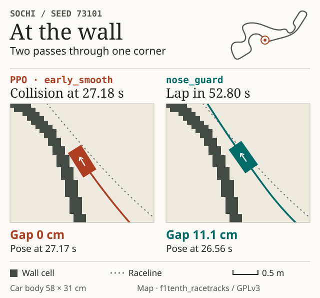

| 105 new starts per model | PPO early_smooth |
Arc arc_dynamic |
Pace only clear_straight |
Pace and launch nose_guard |
|---|---|---|---|---|
| Completed laps | 88 | 93 | 93 | 95 |
| Simulator collisions | 17 | 0 | 0 | 0 |
| Timeout | 0 | 12 | 12 | 10 |
| Completed laps without raster contact | 83 | 93 | 93 | 95 |
On the 81 triples without sampled body contact, the time savings are 9.94% and 1.58%. The pace-only variant saves 9.21% against Arc and takes 0.15% longer than PPO on its own 86 completed triples.
Speed and launch clearance
On the 15 development laps both models completed, Arc traveled only 0.61% farther than PPO, but braking for the end of the visible arc capped speed in 46% of samples. The new speed head accounts for exit speed when visibility exceeds one metre. It allows more lateral acceleration on medium-radius curves and exceeds 10 m/s only on the straight arc.
The two shortest launch arcs use the actual body outline and gradually restore the 5 cm reserve. A guard for forward rays accounts for LiDAR noise and distance traveled during steering delay. Within Arc’s existing graph the edit changes 12,044 of 28,427 coefficients, including 11,906 in the envelope, 74 in the speed head and 64 in the steering head.
Two collisions motivate the revision
The first attempt recovers four of seven historical timeouts, then crashes at Austin after 0.09 s on seed 71303 from an initial clearance of 4.45 mm. The second recovers three historical cases, then crashes at Austin after 0.13 s on seed 71808 from 0.196 mm of clearance. Earlier tests become development evidence for the next revision. The final coefficients are frozen before five fresh seeds from 73101 to 73505 per track.
| Historical timeout | Initial body clearance | Final outcome |
|---|---|---|
| IMS 60404 | 28.9 mm | Clean finish in 29.08 s |
| Monza 60404 | 18.1 mm | Clean finish in 46.33 s |
| Austin 60404 | 6.3 mm | Timeout |
| Yas Marina 60404 | 9.8 mm | Timeout |
| IMS 60505 | Overlap | Timeout |
| Oschersleben 60404 and 60505 | Both overlap | Two timeouts |
The five unresolved historical timeouts include two starts with less than a centimetre of clearance and three with initial overlap. In kinematic reversing tests, over 99% of the newly swept area along feasible exits falls in the LiDAR blind sector.
Trajectory audit
The final comparison covers 420 episodes and 2,463,075 poses. On all 95 candidate finishes, the body stays clear of occupied pixels at the recorded poses. The minimum is 0.85 cm compared with Arc’s 1.69 cm. Sampling every 0.01 s excludes movement between poses and the step after the last sample. Across 315 previously observed cases, the candidate finishes 294 laps with zero reported collisions. Only the fresh 105 cases provide an independent test of this version.
Each episode lasts up to 200 simulated seconds. Finishing requires visiting at least 99% of the waypoints in order and crossing the start line without a simulator collision. Models share starting poses and LiDAR noise. Times compare laps completed from the same starts by the specified models. A negative value means a faster lap.
Completed laps by track
| Track | early_smooth |
arc_dynamic |
clear_straight |
nose_guard |
|---|---|---|---|---|
| Austin | 5/5 | 4/5 | 4/5 | 5/5 |
| BrandsHatch | 5/5 | 5/5 | 5/5 | 5/5 |
| Budapest | 5/5 | 5/5 | 5/5 | 5/5 |
| Catalunya | 5/5 | 5/5 | 5/5 | 5/5 |
| Hockenheim | 5/5 | 5/5 | 5/5 | 5/5 |
| IMS | 1/5 | 1/5 | 1/5 | 1/5 |
| Melbourne | 5/5 | 5/5 | 5/5 | 5/5 |
| MexicoCity | 5/5 | 5/5 | 5/5 | 5/5 |
| Monza | 3/5 | 4/5 | 4/5 | 4/5 |
| MoscowRaceway | 5/5 | 5/5 | 5/5 | 5/5 |
| Nuerburgring | 5/5 | 5/5 | 5/5 | 5/5 |
| Oschersleben | 3/5 | 2/5 | 2/5 | 3/5 |
| Sakhir | 4/5 | 5/5 | 5/5 | 5/5 |
| SaoPaulo | 5/5 | 5/5 | 5/5 | 5/5 |
| Sepang | 5/5 | 5/5 | 5/5 | 5/5 |
| Silverstone | 5/5 | 5/5 | 5/5 | 5/5 |
| Sochi | 0/5 | 5/5 | 5/5 | 5/5 |
| Spa | 5/5 | 5/5 | 5/5 | 5/5 |
| Spielberg | 5/5 | 5/5 | 5/5 | 5/5 |
| YasMarina | 2/5 | 2/5 | 2/5 | 2/5 |
| Zandvoort | 5/5 | 5/5 | 5/5 | 5/5 |
Two paths through Sochi
On start 73101 the edited PPO crashes after 27.18 s. Its last recorded pose is at 27.17 s. The final geometric network finishes in 52.80 s and its minimum body clearance on the raster is 2.56 cm. Both detail panels show the same section of the corner.

